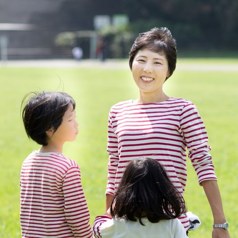
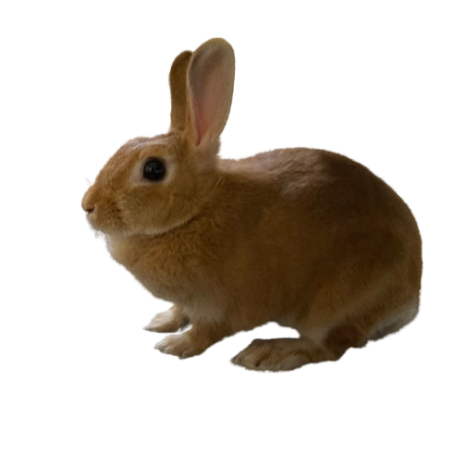

出雲けいこ
さいたま市議会議員

さいたま市議会議員
「ひとりで抱え込まなくていいまちへ」
2010年、夫と0歳の子どもと3人で、関西からさいたま市へ引っ越してきました。親せきも友人も近くにいない中での子育て。
そして、さいたまに来て1年も経たない2011年、東日本大震災が起こりました。
不安な日々の中で、家族だけで子どもを守ることには限界があると感じました。だからこそ、友人や地域とのつながり、そして社会全体で子どもを育てていく仕組みが大切だと考えるようになりました。

2015年の統一地方選挙の際には、友人と一緒に当時の市議会議員さんたちから「どんなことに取り組んでいるのか」を聞くイベントを企画しました。
当時のさいたま市議会は、60人中12人が女性議員。けれど、子育て中の女性議員はいませんでした。
「子育てをしている当事者だからこそ、届けられる声がある」
そう思い、2019年春、さいたま市議会議員選挙に立候補しました。2023年の2期目には、私を含めて子育て中のママ議員が3人に。女性議員は15人になりました。

子育てのリアルな声を政策提案につなげています。子どもたちが安全に、こころにっこり過ごせるまちは、子どもだけでなく、高齢の方や障害のある方など、誰もが安心して暮らせるまちにもつながると考えています。
一人ひとりの暮らしの声に耳を傾け、「こんなこと、相談していいのかな？」と思うような小さな声も、きめ細かな政策につなげていきます。
お困りごとや、まちについて気になることがあれば、どうぞお気軽にお聞かせください。

日本固有種の野菜を育てたり、梅酒・梅干し・かりんジュース・お味噌を手作りしたり。読み語りボランティアや英語・スペイン語・中国語などの多言語活動も、子どもたちと一緒に楽しんでいます。

そして最近は、うさぎも我が家の仲間入り。
議員として、そして一人の生活者・母親として。日々の暮らしの中で感じることを大切にしています。